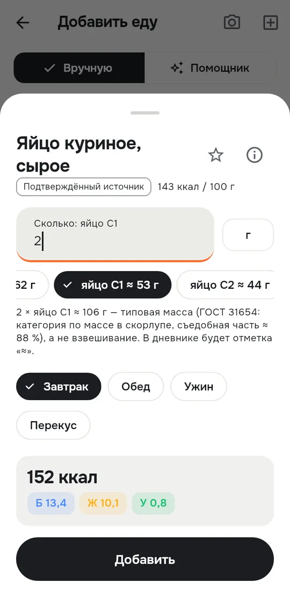
Поиск и привычная мера
Найдите продукт и укажите граммы или меру: «2 яйца С1», «столовая ложка сметаны», «стакан молока».
Мера — это типовая масса. В дневнике она помечена «≈». Взвесили — введите граммы.
Записывайте еду поиском, голосом, по штрихкоду или фото. Меняйте порции и смотрите, из чего сложилась каждая цифра.
Версия 0.23.2 от 21 ноября 2026, Android 7 и новее, 59 МБ. Для старых 32-битных телефонов — другой файл (52 МБ).
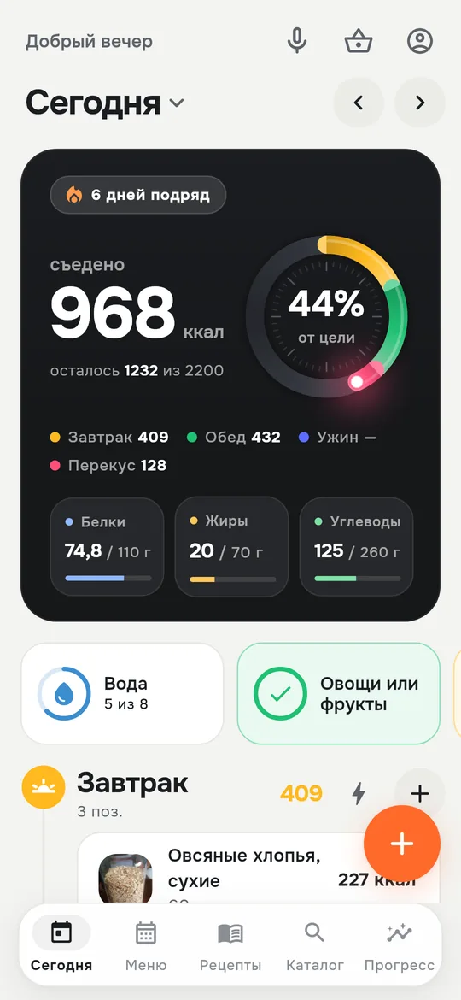
Источник каждой строки — USDA FoodData Central. Округление только в конце.
Каждый способ заканчивается одинаково: вы видите продукт и граммы и сами нажимаете «Добавить». Ничего не записывается без вас.

Найдите продукт и укажите граммы или меру: «2 яйца С1», «столовая ложка сметаны», «стакан молока».
Мера — это типовая масса. В дневнике она помечена «≈». Взвесили — введите граммы.
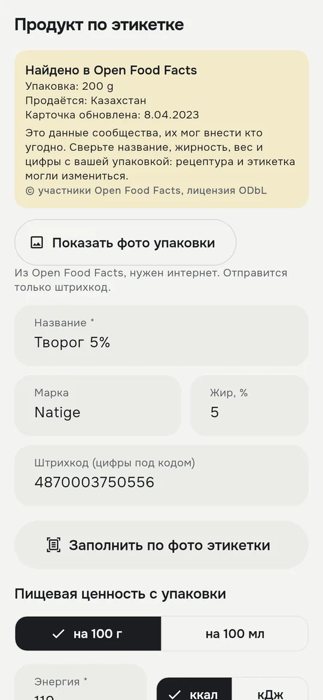
6 864 товаров Казахстана, России и Беларуси уже в телефоне. Сканер работает без интернета.
Нет в списке? Можно поискать в Open Food Facts: нужен интернет и ваше согласие. Нет и там — введите цифры с упаковки.
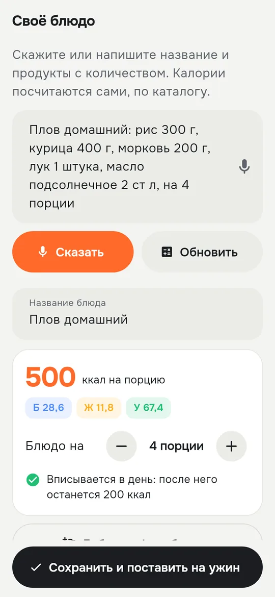
«Плов: рис 300 грамм, курица 400, морковь 200, на 4 порции» — Ложка разберёт продукты и граммы.
Речь распознаёт Android. Без русского пакета — через интернет, если вы разрешите. Текст можно поправить до записи.
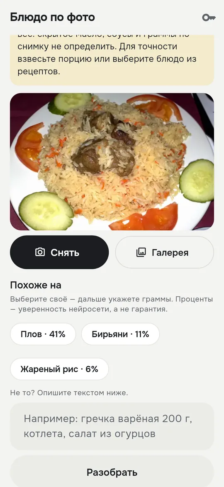
Нейросеть в телефоне предложит, что это за блюдо. Фото никуда не отправляется.
Вес по снимку не узнать — граммы укажете вы. Нейросеть (21 МБ) скачивается один раз по кнопке.
Нажмите на любое блюдо — и увидите, как получилось число: продукт, граммы, калории на 100 г и источник.
Масса яйца С1 — типовая (ГОСТ 31654, съедобная часть ≈ 88 %). Поэтому итог с «≈».
Мера, оценка по фото или типовая порция помечаются знаком «≈». Взвешенные граммы — без него.
Если у продукта неизвестен сахар или соль, Ложка не подставит 0. В итогах дня появится «≥»: на деле может быть больше.
У продуктов есть жирность и состояние: сырое, варёное, сухое. Две ложки сметаны (50 г):
Исправили цифры продукта — старые записи остаются как были. Пересчитать можно только по вашему решению, с отменой.
Плов, бешбармак, манты, борщ, сырники — с калориями на порцию и готовкой по шагам: крупный текст, таймеры, экран не гаснет. Любой ингредиент можно заменить и сразу увидеть пересчёт.
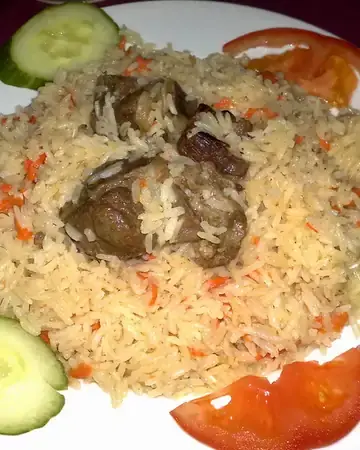
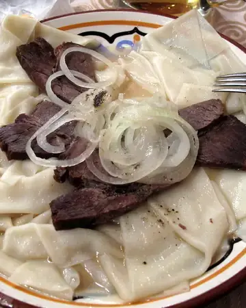
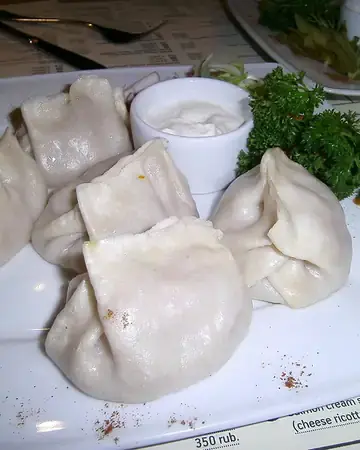
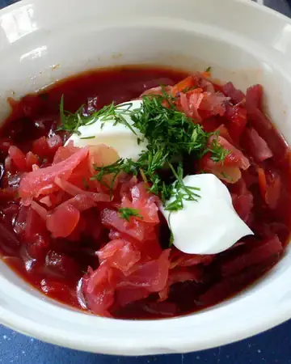
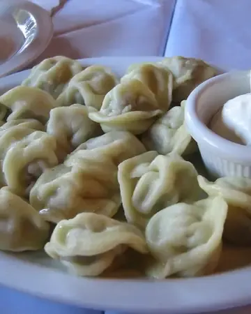
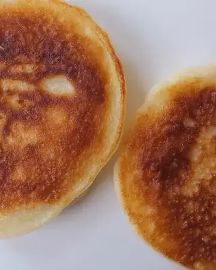
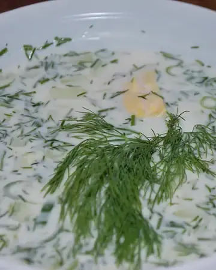
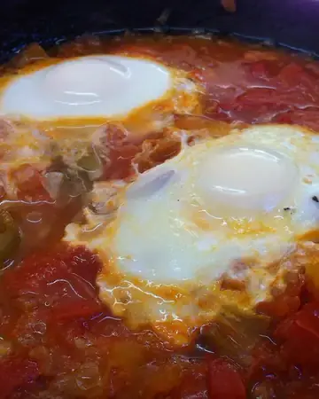
У 313 рецептов — фото именно этого блюда, с указанием автора и лицензии. У остальных фото пока нет: чужое блюдо вместо настоящего мы не ставим.


Дневник хранится в телефоне. Аккаунт не нужен. В интернет Ложка обращается только для того, что перечислено в списке «Нужен интернет», и почти всегда по вашей кнопке.
Ложки пока нет в Google Play, поэтому Android покажет обычное предупреждение о файле не из магазина. Проверить файл можно так:
Антивирусы. Загрузите скачанный файл на VirusTotal — его проверят десятки антивирусов.
Отпечаток SHA-256. Основной файл: 15acb45e10701012952d9853bf9d266c266a874ad7850b880d41f43ca79d828f. 32-битный: a23890388c7bcfcaf4d6e841545cb4b0711cabdf00e5ea5cbd23279eaccefa94
Подпись. Все версии подписаны одним ключом, сертификат 190abbfe3633ab9542c68699d2b9da0382ba888eb560e3db6313a3072ff964d8. Файл с другой подписью Android поверх установленной Ложки не поставит.